Este tutorial lo guía, usando VSCode, en la construcción de una aplicación Angular compuesta del módulo principal y de un módulo llamado CourseModule el cual declara un componente para desplegar una lista de cursos. Los pasos que siguen son:
- Desplegar la lista de cursos (sin Bootstrap) a partir de un arreglo inicializado directamente con la información dentro de la aplicación.
- Agregar Bootstrap al paso anterior.
- Cambiar la forma como se obtiene la información de los cursos. Los cursos se obtienen con un servicio que se conecta vía
HTTP GETa un sitio que los provee, este servicio retorna una colección de objetosjson.
El resultado final del tutorial es una aplicación que despliega la siguiente lista (Figura 1):
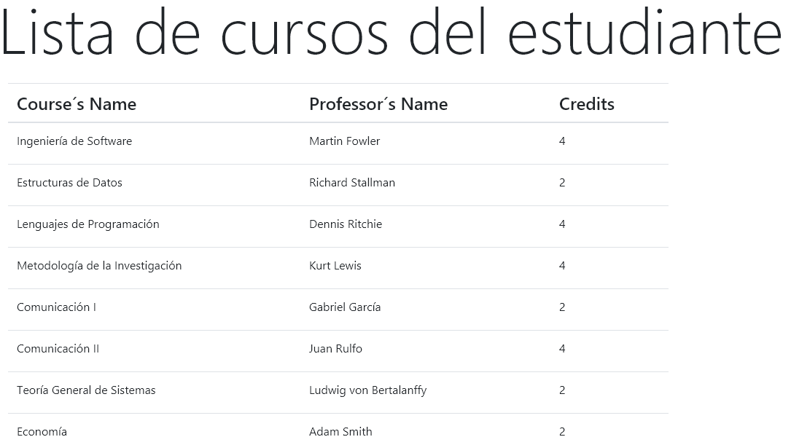
Figura 1
Para realizar este taller Ud. debe tener claras los respuestas a las siguientes preguntas:
Pregunta 1. ¿Qué es un componente en Angular?
Pregunta 2. ¿Cuál es la relación entre aplicación, módulo y componente?
Pregunta 3. ¿Qué es un decorador?
Pregunta 4. ¿Cómo se define la relación entre módulos?
Pregunta 5. ¿Cómo se define la relación entre módulos y componentes?
Pregunta 6. ¿Qué es un selector en un componente?
Pregunta 7. ¿Qué es una vista?
Pregunta 8. ¿Qué es "invocar" un componente?
Pregunta 9. ¿Cuáles son las etiquetas Angular para crear las vistas HTML?
Si no es así, por favor revise el material propuesto antes de seguir. De esta forma podrá sacarle más provecho a este tutorial.
Paso 1: Crear el proyecto
Cree una aplicación Angular que se llame, por ejemplo, tutorialcourses, siguiendo las instrucciones que se encuentran aquí.
Abra su aplicación en VSCode y:
- Cambie el título de la página: Vaya al archivo
index.htmly modifique la etiquetatitlepor nombre del tutorial "Listar Cursos". - Borre el contenido del archivo
app.component.html
Paso 2: Crear un nuevo módulo
Para crear el nuevo módulo utilizamos la aplicación angular-cli que está integrada dentro de VSCode.
Para esto, vaya a la carpeta app, clic derecho, Generate Module. El nombre del nuevo módulo es course y voila!
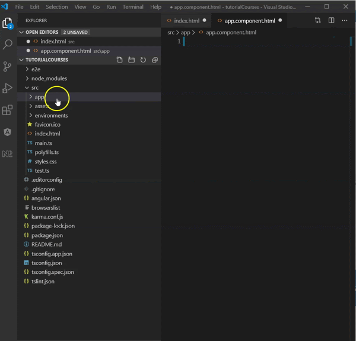
Paso 3: Revisar lo que se generó
Ahora vamos a revisar lo que generó angular-cli.
- La clase del módulo nuevo se encuentra dentro del archivo
course.module.ts
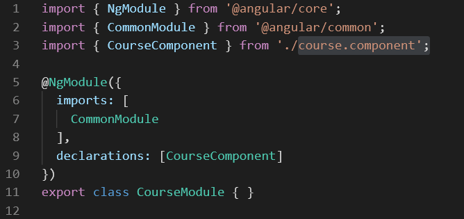
En la línea 11 está la declaración de la clase CourseModule.
Lo que determina que esta clase es un módulo es el decorador @NgModule que empieza en la línea 5.
Note que dentro del decorador hay un objeto que tiene dos atributos:
importscuyo valor es un arreglo de los nombre de los módulos que necesita ydeclarationscuyo valor también es un arreglo de los nombre de los componentes que declara.
En la línea 1 está el import de Angular para el decorador.
En la línea 2 está lo básico de Angular (CommonModule) que todos los módulos deben importar (importado dentro del decorador en la línea 7)
En la línea 9, dentro del decorador de módulo, está la declaración del componente que se crea por defecto al crear un módulo. En la línea 3 se importa el archivo del componente.
- Ahora abra el archivo
course.component.tspara revisar el componente que se creó por defecto como parte del módulo.
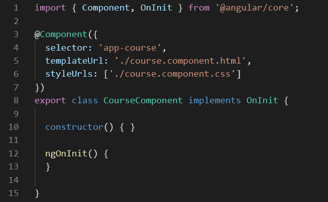
En la línea 8 está la declaración de la clase CourseComponent.
Lo que determina que esta clase es un componente es el decorador @Component que empieza en la línea 3.
Dentro del decorador hay un objeto que tiene tres atributos:
selectorcuyo valor es un string, que representa la etiqueta que se usará para "invocar" el componente directamente sobre alguna vista.templateUrlcuyo valor es un string y representa el nombre del archivo que contiene la vista del componentestyleUrlscuyo valor es un arreglo de strings y contiene los nombres de archivos, si los hay, de estilos que se van a usar en este componente particular.
En la línea 1 está el import de Angular para el decorador del componente (Component).
También importa el código de la interface OnInit . El componente implementa la interface OnInit. Esta interface define la función ngOnInit() que se llamará cada vez que se cree el componente.
En la línea 12 podemos ver que, por defecto, la función está vacía.
En la línea 10 está el constructor del componente que también está vacío.
Paso 4: Incluir el nuevo módulo en el principal
Para que la aplicación pueda utilizar el nuevo módulo, este se debe importar en el módulo principal AppModule (archivo app.module.ts).
Para importar en el módulo principal el módulo de CourseModule se debe realizar dos cosas:
- Incluir el archivo donde está la definición:
import { CourseModule } from './course/course.module';
- Ir al decorador e incluir en el arreglo del atributo
importsel nombre del módulo, es decir, de la clase.

Siempre que incluimos un archivo, debemos tener en cuenta la ruta donde se encuentra, a partir de dónde lo vamos a incluir.
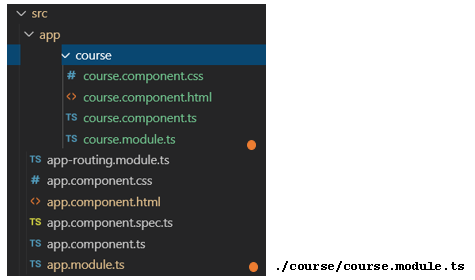
La siguiente figura sintetiza la relación entre los elementos hasta ahora creados:
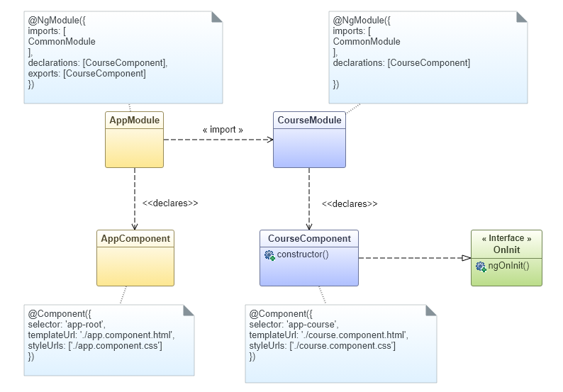
Teniendo en cuenta lo que hemos realizado hasta el momento y el diagrama de clases anterior podemos repasar las respuestas a algunas de las preguntas:
Pregunta 2: ¿Cuál es la relación entre aplicación, módulo y componente? | Una aplicación está compuesta de módulos. Por defecto siempre hay un módulo principal llamado Un módulo declara componentes. En el diagrama de clases:
|
Pregunta 3: ¿Qué es un decorador? | Los decoradores son anotaciones sobre las clases o sobre otros elementos del lenguaje. La forma general es:
El decorador y la información en sus atributos determina estructura y comportamiento del elemento que está anotado. Hasta ahora en el ejemplo, hemos usado el decorado de clase para definirla como módulo y el decorador de componente. En el diagrama de clases estamos representando estos decoradores, que son metadatos, como comentarios. |
Pregunta 4: ¿Cómo se define la relación entre módulos? | La relación entre módulos, hasta ahora en el ejemplo, se define como Significa que el módulo que importa otro podrá "ver" los elementos que el módulo exporta. |
Pregunta 5: ¿Cómo se define la relación entre módulos y componentes? | Un módulo declara componentes. También declara Los componentes pueden ser internos al módulo o el módulo los puede exportar para que otros módulos los utilicen. |
Paso 5. Invocar el componente
Antes de invocar el componente CourseComponent, veamos cómo en el index se invoca el componente principal.
La siguiente figura presenta el contenido del index.html y el contenido del componente principal AppComponent.
Donde aparece el número 1 se está invocando el componente principal utilizando su selector.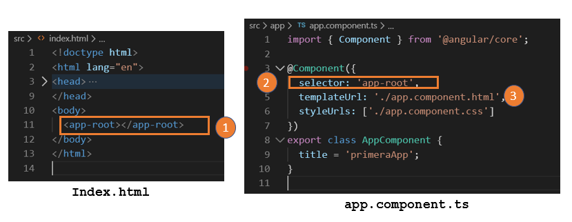
El selector está definido en la línea marcada con el número 2.
Lo que va a suceder en ejecución, es que, en el lugar donde se está utilizando el selector app-root, se va a reemplazar por el contenido del archivo (marcado con el número 3) app.component.html.
Siguiendo el mismo principio, lo que vamos a hacer es invocar el componente de los cursos dentro del HTML del componente principal.
- Buscamos el nombre del selector de
CourseComponent - Lo utilizamos en
app.component.html
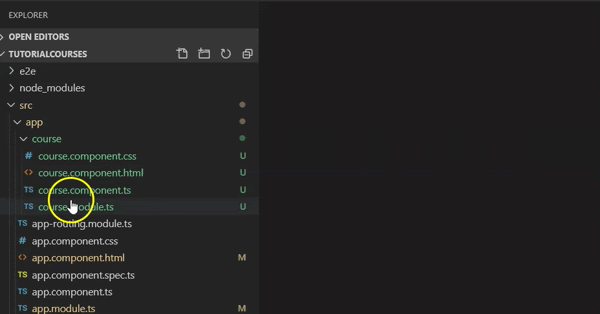
Sigamos con las preguntas:
Pregunta 6: ¿Qué es un selector en un componente? | Corresponde al nombre dado al atributo |
Pregunta 7: ¿Qué es una vista? | La vista de un componente, es el código html que será usado cuando se invoque el componente. En este ejemplo, estamos utilizando el atributo |
Pregunta 8: ¿Qué es "invocar" un componente? | Una de las formas de invocar un componente es utilizando su selector como etiqueta HTML en el lugar donde queremos que el componente se despliegue. |
Ejecutemos la aplicación utilizando un terminal de VSCode con el comando
ng serve
En la página debería desplegarse el encabezado Lista de cursos del estudiante, pero no aparece nada.
- Abramos la consola y veremos el error:
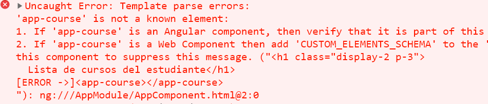
¿Por qué dice que app-course no es un elemento conocido? Veamos el diagrama de clases:
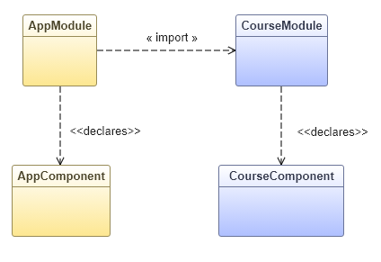
Para que el componente CourseComponent que declara el módulo CourseModule, sea visible desde la vista del componente AppComponent, CourseModule debe exportarlo. Modificamos el diagrama para incluir exports sobre la relación entre CouseModule y CourseComponent.
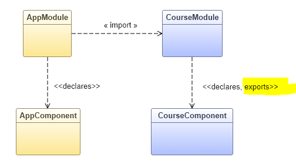
En el código tenemos que se ha agregado el atributo exports en el decorador del módulo.
import { NgModule } from '@angular/core';
import { CommonModule } from '@angular/common';
import { CourseComponent } from './course.component';
@NgModule({
imports: [
CommonModule
],
declarations: [CourseComponent],
exports: [CourseComponent]
})
export class CourseModule { }Volvemos a ejecutar la aplicación y obtenemos.
¿De dónde aparece el texto course works ?
ABramos el archivo de la vista del componente CourseComponent. Es decir el archivo course.component.html y aquí tenemos el mensaje que se desplegó. En los próximos pasos vamos a cambiar este mensaje por el despliegue de la lista de cursos.
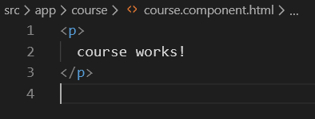
En Angular, los componentes siguen una arquitectura Model, View, Controller (MVC). El modelo corresponde a la información que se va a desplegar al usuario o a recibir del usuario a través de la vista del componente. La vista es el HTML que se despliega en la aplicación y el controlador es la clase del componente que se ocupa de proveer la información del modelo, de atender las acciones del usuario (por ejemplo cuando hace clic en al ún botón, y de mantener la vista actualizada (esto lo hace automáticamente Angular cuando se define el modelo).
Veamos estos conceptos en el ejemplo. El modelo es la información de la lista de cursos. El controlador debe tener una forma de obtener esa info, la vista despliega la lista de cursos. En ese ejemplo, como no hay interacción con el usuario, el controlador no es responsable de nada más.
En los siguientes pasos explicamos cómo construir estos elementos.
Paso 1: Definir la estructura del modelo
Primero vamos a crear una clase Course que contenga la información de un curso. Un curso tiene un nombre, el nombre del profesor y el número de créditos.
La clase solo va a declarar los atributos y a definir unos getters para obtener los valores
Para crear la clase, ir a la carpeta course y desde allí clic derecho luego seleccionar Generate Class y darle como nombre course
Como resultado del comando, podemos ver que se creó el archivo course.ts dentro de la carpeta course.
export class Course {
constructor(private nameA: string, private professorA: string, private creditsA: number) {
}
get name(): string { return this.nameA; }
get professor(): string { return this.professorA; }
get credits(): number { return this.creditsA; }
}Al definir los getter de la forma como está en el código, esto es syntaxis TypeScript, podemos luego invocar el método utilizando solo el nombre del getter. Por ejemplo,
this.name
Paso 2: Asociar el modelo con el componente
Ahora que tenemos la clase que representa los cursos, podemos declarar, dentro de la clase del componente, un arreglo para los cursos:
private courses: Array<Course>; Nos aparece que Course no está definido, entonces debemos importarlo:
import { Component, OnInit } from '@angular/core';
import { Course } from './course';
@Component({
selector: 'app-course',
templateUrl: './course.component.html',
styleUrls: ['./course.component.css']
})
export class CourseComponent implements OnInit {
constructor() { }
private courses: Array<Course>;
ngOnInit() {
}
}Hasta acá el arreglo está undefined. Para resolver esto, tenemos que inicializar el arreglo.
En este paso, vamos primero a darle valor utilizando unos datos construidos directamente en el código (*Como se hizo en el taller de TypeScript).
Los datos para el modelo
Vamos a declarar un arreglo que contiene los cursos. Esto lo hacemos en un archivo (New File desde VSCode) que se encuentre en la carpeta course y que se llame dataCourses.ts.
En este archivo declaramos e inicializamos el arreglo con algunos datos de los cursos. Como estamos creando objetos de la clase Course, debemos importar esta clase (primera línea del archivo).
import { Course } from './course';
export const dataCourses = [
new Course('Ingeniería de Sw', 'Pablo Picasso', 4),
new Course('Futbol 1', 'Freddy Rincón', 2),
new Course('Algoritmos', 'Carlos Fuentes', 2),
new Course('Estructuras de Datos', 'Yesid D', 1),
new Course('Futbol 2', 'James R', 6)
];El controlador, que es la clase del componente, debe ocuparse de tener acceso al modelo.
Para esto definimos un atributo privado courses y un método público que lo retorna.
private courses: Array<Course>;
getCourseList(): Array<Course> {
return dataCourses;
}dataCourses es la variable que definimos en el archivo dataCourses.ts entonces, tenemos que importarlo.
En la función que se va a llamar cuando se cree el componente, es decir, función ngInit() actualizamos la variable del componente que contiene la información.
Esta variable es la que va a cceder la vista del componente como veremos en el siguiente paso.
import { Component, OnInit } from '@angular/core';
import { Course } from './course';
import { dataCourses } from './dataCourses';
@Component({
selector: 'app-course',
templateUrl: './course.component.html',
styleUrls: ['./course.component.css']
})
export class CourseComponent implements OnInit {
constructor() { }
private courses: Array<Course>;
getCourseList(): Array<Course> {
return dataCourses;
}
ngOnInit() {
this.courses = this.getCourseList();
}
}Como ya hemos explicado, la vista es el HTML asociado con el componente. El objetivo es desplegar la lista de cursos en una tabla.
Paso 1: El encabezado
El siguiente código muestra una tabla y su encabezado. Note que el archivo contiene sólo la parte de HTML que se va a desplegar. No es un archivo completo HTML, no tiene las etiquetas head y tampoco body.
<div class="container-fluid">
<div class="col-6">
<table class="table">
<thead>
<tr>
<th class="h4">Course's Name</th>
<th class="h4">Professor's Name</th>
<th class="h4">Credits</th>
</tr>
</thead>
<tbody>
</tbody>
</table>
</div>
</div>
El contenido dinámico de la tabla lo vamos a crear al interior de las etiquetas:
<tbody>
</tbody>Angular ofrece una serie de extensiones a HTML, representadas en nuevas etiquetas y nuevos atributos para facilitar la construcción del contenido dinámico de la página.
En este ejemplo vamos a ver dos de estas extensiones:
- Cómo escribir un ciclo dentro de HTML
- Cómo acceder a un valor de un objeto para que quede desplegado en el HTML
Un ciclo dentro de HTML
La instrucción es un atributo que se define sobre la etiqueta donde queremos que empiece el ciclo. El ciclo termina donde esa misma etiqueta se cierra.
La forma general es:
*ngFor="let iter of coleccion"
Donde:
iteres una variable local al ciclocolecciones un atributo que DEBE estar definido en el componente (es parte dell modelo)
Así, en nuestro código, queremos construir una fila de la tabla, etiqueta tr, por cada elemento en el arreglo courses que definimos en el componente.
La variable c es el iterador del ciclo que va tomando el valor de cada elemento desde principio a fin.
<tr *ngFor="let c of courses">
// Cuerpo del ciclo
</tr>En el cuerpo del ciclo queremos desplegar los datos de cada elemento. Para desplegar un valor de un objeto, utilizamos la expresión {{ objeto }}.
Veamos el ejemplo:
<tr *ngFor="let c of courses">
<td>
<dd>{{c.name}}</dd>
</td>
<td>
<dd>{{c.professor}}</dd>
</td>
<td>
<dd>{{c.credits}}</dd>
</td>
</tr>Así, el resultado de la aplicación hasta ahora es:
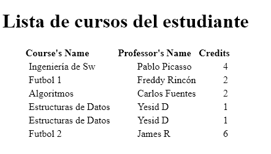
Paso 1: Instalar Bootstrap
Para agregar bootstrap en nuestro proyecto, debemos definir la dependencia en el archivo package.json. En la siguiente imagen vemos esta dependencia en la línea 22, "bootstrap": "^4.4.1" estamos definiendo una versión de Bootstrap compatible (eso significa ^) con la 4.4.1. Para entender mejor las convenciones o semántica de los símbolos en la definición de las versiones pueden ver semve.
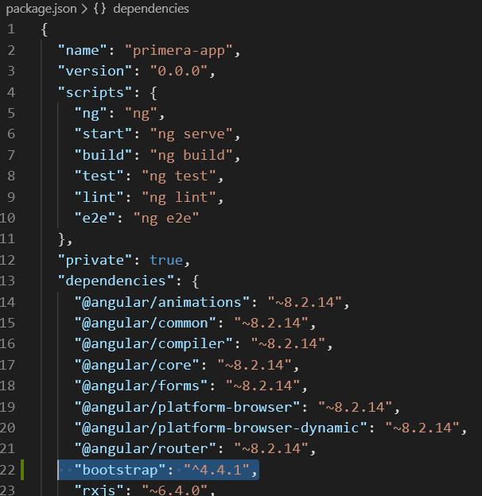
Una vez modificado el archivo package.json debemos ejecutar de nuevo:
npm install
Esto es así sin importar qué se modificó en ese archivo. Si desde VSCode tengo un terminal que está ejecutando ng serve, entonces debo suspender esa ejecución e invocar el npm install.
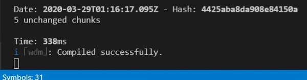
El resultado es instalar las dependencias nuevas.
Paso 2: Agregar los estilos bootstrap al proyecto
Para agregar los estilos Bootstrap al proyecto debemos ir al archivo angular.json y en el atributo styles agregar la referencia a los estilos de Bootstrap locales que acabamos de instalar:
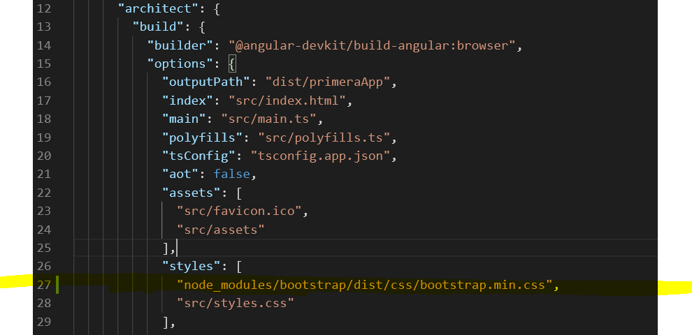
Paso 3: Ejecutar de nuevo
Ahora podemos ejecutar de nuevo ng serve y obtendremos la siguiente lista:
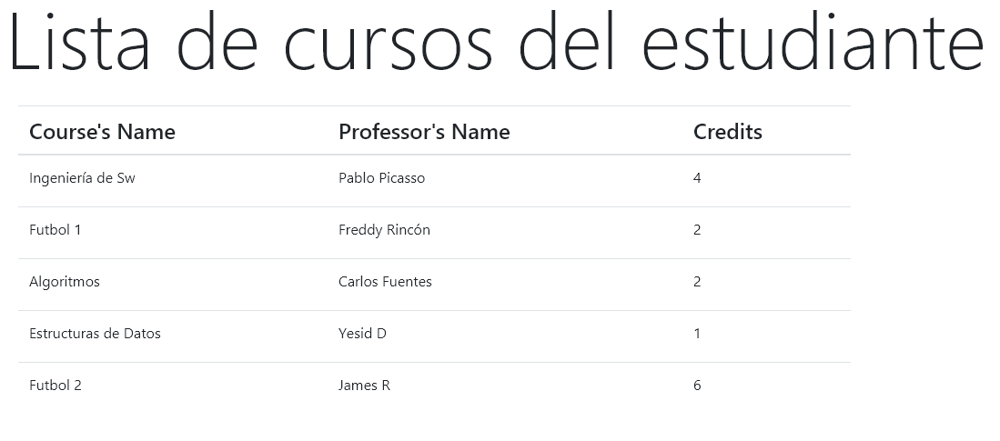
En este paso vamos a cambiar la obtención de los datos, creado en memoria directamente el código, por el llamado a un servicio HTTP GET.
Para esto debemos:
- Crear un servicio y entender la inyección de dependencias en Angular
- Utilizar el módulo
HttpClientModulede angular y su servicioHttpClient. Esto nos permite de una manera sencilla hacer llamos HTTP (get, post, put, delete). - Crear un método en el servicio que retorna un objeto
Observable(asíncrono) - Crear la variable de ambiente url
- Invocar con una suscripción, el método del servicio, desde el componente para que obtenga los cursos.
Paso 1: Crear un servicio
Los servicios son clases que ofrecen funciones que serán utilizadas por componentes u otros elementos angular. ¿Cómo organizar las clases servicios? Es una decisión de diseño. Las clases servicios deben ser cohesivas, es decir, ocuparse de un solo tipo de responsabilidad.
En este ejemplo, vamos a crear un servicio que se ocupa de obtener el modelo para el componente de los cursos.
Dado que un servicio es una clase, si otra clase tiene acceso al servicio, lo podría crear. Sin embargo, la creación de los servicios es responsabilidad de Angular y funciona de la siguiente manera:
- El servicio debe ser Inyectable (va a estar anotado con
@Injectable(...)) - El componente que lo va a usar, lo debe declarar en su constructor.
- Cuando el componente es creado, Angular le inyecta una instancia del servicio.
Vamos a crear el servicio desde la carpeta course. De nuevo usamos angular-cli:
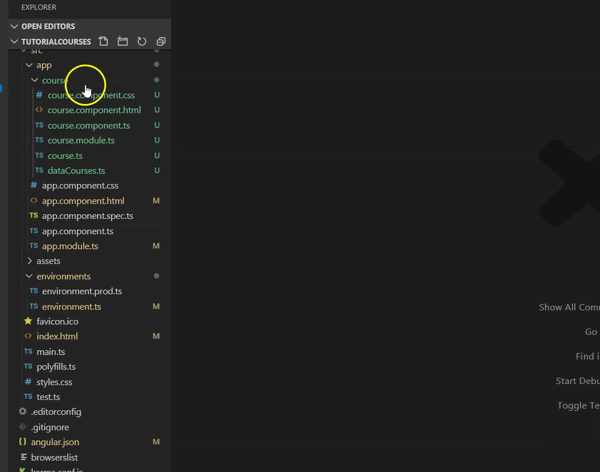
El archivo generado resultado es:
import { Injectable } from '@angular/core';
@Injectable({
providedIn: 'root'
})
export class CourseService {
constructor() { }
}Note la anotación @Injectable. El atributo providedIn: ‘root' significa que el servicio podrá ser utilizado en cualquier parte de la aplicación.
Paso 2: Utilizar HttpClient
Nuestro servicio va a definir una función getCourses() que obtiene los cursos desde un sitio (vas a decir desde un back-end) utilizando HTTP get. Para esto, vamos a inyectar un servicio definido por angular que se llama HttpClient. Inyectamos ese servicio declarando en el constructor e importando el archivo de la clase correspondiente:
import { HttpClient } from '@angular/common/http';
...
export class CourseService {
constructor(private http: HttpClient) { }
...
}La función getCourses() va a utilizar http para invocar el get. Para esto se necesita conocer la url donde está el servidor que provee los cursos (el back-end). Vamos a suponer que el valor de esa url está en el atributo apiUrl en el paso explicamos esa variable y dónde se inicializa. Entonces, la función es debe llamar:
this.http.get(this.apiUrl)
Paso 3: Observables y asincronía
Todas las funciones http son asíncronas, es decir se hace el llamado pero la aplicación que llamó, en este caso el front, sigue su curso. Por esta razón, estas funciones devuelven el resultado en un objeto Observable.
El código completo del servicio es el siguiente:
/src/app/course/course.service.ts
import { Injectable } from '@angular/core';
import { HttpClient } from '@angular/common/http';
import { Observable } from 'rxjs';
import { Course } from './course';
import { environment } from '../../environments/environment';
@Injectable({
providedIn: 'root'
})
export class CourseService {
private apiUrl = environment.baseUrl + 'courses.json';
constructor(private http: HttpClient) { }
getCourses(): Observable<Course[]> {
return this.http.get<Course[]>(this.apiUrl);
}
}Paso 4: Crear la variable de ambiente url
El valor de la url de base donde se encuentra el back-end lo vamos a declarar dentro del archivo environment.ts que está en la carpeta environments:
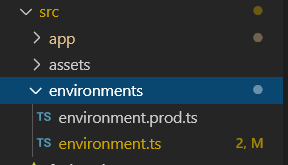
Vemos que allí hay dos archivos. El de producción que tendrá los valores de las url en producción y el de desarrollo que es el que estamos actualizando.
El contenido es un objeto con atributos de configuración. En particular está el atributo baseUrl que hemos definido para componer la url final. En este ejemplo, esta url lleva a un json que está guardado en un repo de github.
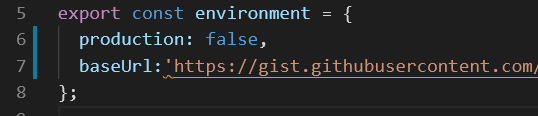
Desde nuestro servicio incluimos este archivo y componemos la url final utilizando el valor en:
environment.baseUrl: "https://gist.githubusercontent.com/josejbocanegra/9bc286433e85ad2fdd3b4d3b2a1998f8/raw/ab432ff4f10f767a8c997a8e15012cd7d908dd62/"Paso 5: Suscribirse al observable del servicio
Nuestro componente debe ahora llamar la función creada en el servicio. Tenemos que hacer varias cosas:
- Declarar el servicio para que Angular lo inyecte y podamos usar la función
Invocar la función que retorna un Observable.
Para poder usar el servicio en el componente necesitamos declararlo en el constructor e importar el archivo:
...
import { CourseService } from './course.service';
@Component({
selector: 'app-course',
templateUrl: './course.component.html',
styleUrls: ['./course.component.css']
})
export class CourseComponent implements OnInit {
constructor(private courseService: CourseService) { }
...
}Un Observable tiene una función de suscripción.
Significa que quien llama al observable, se suscribe a él.
Cuando el método asíncrono termina, se va a ejecutar la suscripción.
La suscripción recibe una función y esa función tiene:
- como parámetro el resultado del método asíncrono y
- en el cuerpo de la función lo que queremos hacer con ese resultado.
Si el resultado está en la variable cs (los cursos que devolvió el servicio), lo que queremos hacer es actualizar el atributo de la clase:
cs => {this.courses = cs; }Entonces, tenemos que cambiar el método del componente getCoursesList() así:
getCourseList() {
this.courseService.getCourses().subscribe(cs => {
this.courses = cs;
});
}El código completo del componente se puede ver aquí:
/src/app/course/course.component.ts
import { Component, OnInit } from '@angular/core';
import { Course } from './course';
import { dataCourses } from './dataCourses';
import { CourseService } from './course.service';
@Component({
selector: 'app-course',
templateUrl: './course.component.html',
styleUrls: ['./course.component.css']
})
export class CourseComponent implements OnInit {
constructor(private courseService: CourseService) { }
private courses: Array<Course>;
getCourseList() {
this.courseService.getCourses().subscribe(cs => {
this.courses = cs;
});
}
ngOnInit() {
this.getCourseList();
}
}Paso 6: Ejecutar la aplicación y resolver el error
Al ejecutar la aplicación nos aparece el siguiente error en la consola.
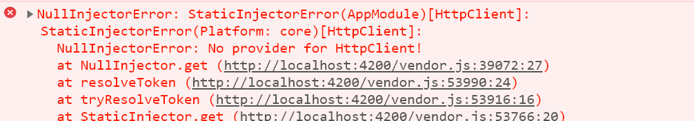
Esto se debe a que en el caso del servicio HttpClient que estamos utilizando en el servicio CourseService, no es suficiente con inyectarlo e importar la clase. Debemos también hacer una importación del módulo en el módulo principal de la aplicación. Así:
src/app/app.module.ts
import { BrowserModule } from '@angular/platform-browser';
import { NgModule } from '@angular/core';
import { HttpClientModule } from '@angular/common/http';
import { AppComponent } from './app.component';
import { CourseModule } from './course/course.module';
@NgModule({
declarations: [
AppComponent
],
imports: [
BrowserModule,
CourseModule,
HttpClientModule
],
providers: [],
Bootstrap: [
AppComponent
]
})
export class AppModule { }De nuevo podemos ejecutar la aplicación y obtener el resultado esperado. Note que hay muchos más datos en este resultado.
Como conclusión del tutorial tenemos el diagrama completo de clases del ejemplo:
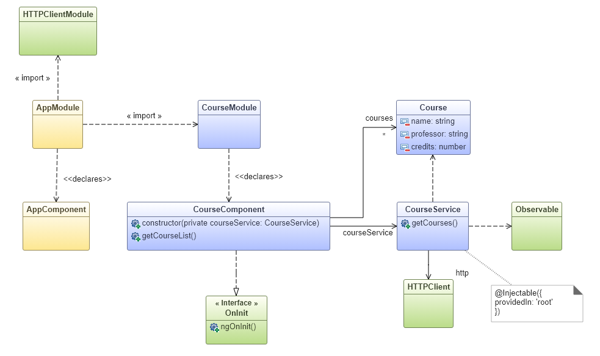